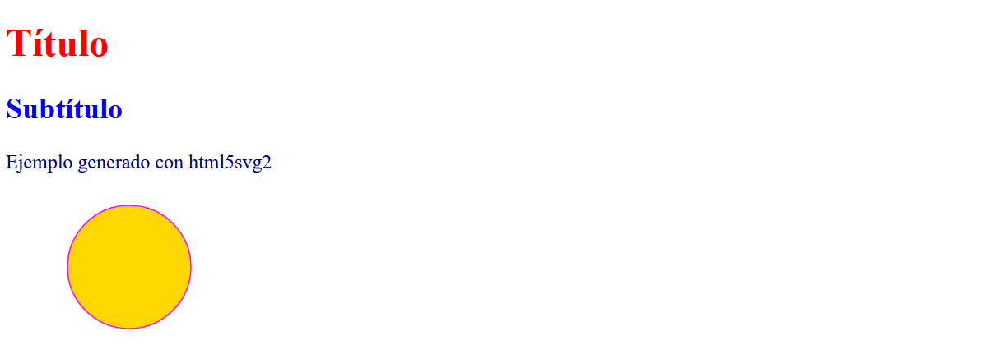

Guía de uso de HTML5SVG2
Acerca de html5svg2
Es una utilidad para generar reportes en formato HTML (HyperText Markup Language) y SVG (Scalable Vector Graphics) en aplicaciones de Python.
Para su uso, se requiere por parte del usuario un conocimiento básico del lenguaje de marcado HTML y SVG.
Si requiere aprender sobre HTML, SVG y temas afines, un buen tutorial lo encuentra en www.w3schools.com
Instalación
pip install html5svg2
Ejemplo de uso
from html5svg2 import dTag, dEtq, HTML5, SVG2, circulo
# Crear el objeto de la clase HTML5
h = HTML5()
# Codificar el bloque <head>
h.cabecera(dTag('title','Ejemplo con HTML5SVG2'))
h.cabecera(dEtq('meta', charset='UTF-8'))
# Codificar el bloque <body>
h.contenido(dTag('h1', 'Título', style='color:red'))
h.contenido(dTag('h2', 'Subtítulo', style='color:blue'))
h.contenido(dTag('p', 'Ejemplo generado con html5svg2', style='color:navy'))
# Incluir gráfico SVG
s = SVG2(W=200, H=120)
s.dibujar(circulo((100, 60), 50, style="stroke:magenta;fill:gold"))
h.contenido(s.exp())
# Archivar
h.gravar("reporte.html")
Vista resultante:
